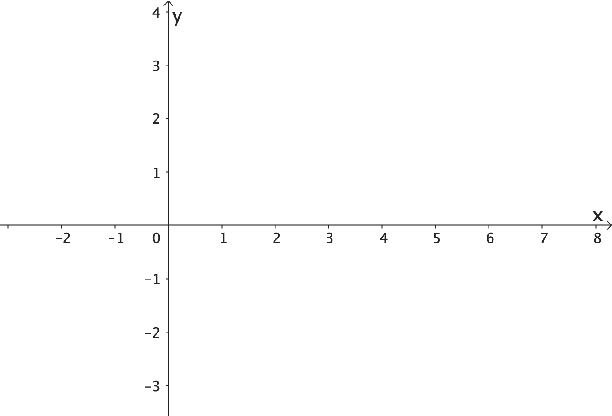
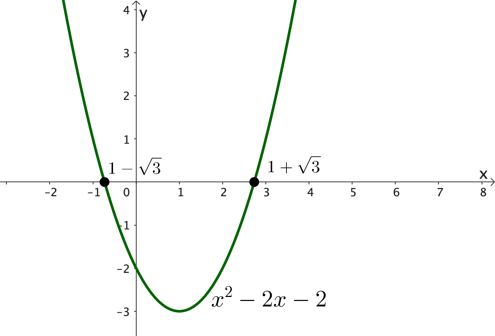
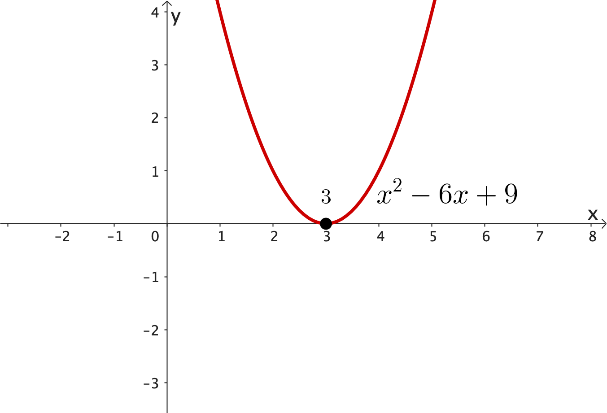
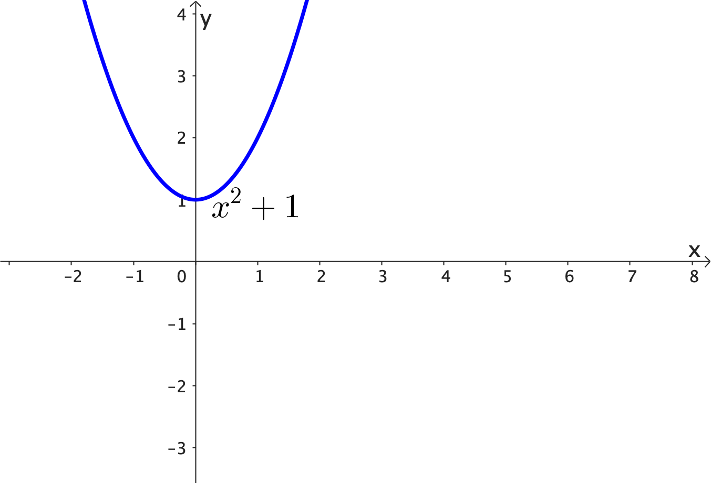
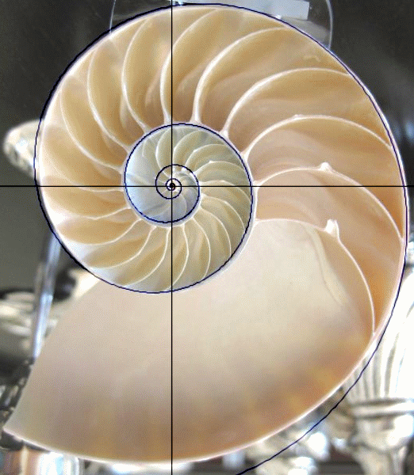

Foundation Mathematics
1017SCG
Week 5
Topics for Week 5
- Solving Linear Equations
- Solving Quadratic Equations
- Solving Logarithmic Equations
- Solving Exponential Equations
Solving Equations
Solve: Find the value of the unknown. \[ x+1= 3 \]
\[ x= 2 \]
\[ \text{Since }\;2 + 1 = 3 \]
Solving Linear Equations
👉 \(3x-7=9,\;\; 8y+2=9,\; 3n-1=-10\)
Allowed: \(\,x,\,\) constants ✅
Not allowed: \(\,x^2,\,x^3,\, x^{1/2},\, \sin x,\, \log (x), \,3^x, \,\) etc. ❌
Solving Linear Equations
Allowed: \(\,x,\,\) constants ✅
Not allowed: \(\,x^2,\,x^3,\, x^{1/2},\, \sin x,\, \log (x), \,3^x, \,\) etc. ❌
This is a linear equation:
\(3x+5 = 17\)
\(3x+5-5 = 17-5\)
\(3x = 12\)
\(\dfrac{3x}{3} = \dfrac{12}{3}\)
\(x = 4\)
Solving Linear Equations
Example 1: Solve \(\,7 n - 10 = 2n + 15\)
| \(7n - 10 + 10\) | \(=\) | \(2n + 15 - 10\) |
| \(7n\) | \(=\) | \(2n + 5\) |
| \(7n - 2n\) | \(=\) | \(2n - 2n + 5\) |
| \(5n\) | \(=\) | \(5\) |
| \(\dfrac{5n}{5}\) | \(=\) | \(\dfrac{5}{5}\) |
| \(n\) | \(=\) | \(1\) |
Solving Linear Equations
Example 2: Solve \(\,\dfrac{3 y +8}{2} = \dfrac{10y+1}{3}\)
| \(\dfrac{3 y +8}{2}\times 2\) | \(=\) | \( \dfrac{10y+1}{3} \times 2\) |
| \(3 y +8 \) | \(=\) | \(\dfrac{2(10y+1)}{3} \) |
| \((3y+8)\times 3\) | \(=\) | \(\dfrac{2(10y+1)}{3} \times 3\) |
| \(3(3y+8)\) | \(=\) | \(2(10y+1)\) |
| \(9y+ 24\) | \(=\) | \(20 y + 2\) |
Solving Linear Equations
Example 2: Solve \(\,\dfrac{3 y +8}{2} = \dfrac{10y+1}{3}\)
| \(9y+ 24\) | \(=\) | \(20 y + 2\) |
| \(24-2\) | \(=\) | \(20y - 9y\) |
| \(22\) | \(=\) | \(11y\) |
| \(y\) | \(=\) | \(2\) |
Solving Quadratic Equations
\(3x^2-7=9,\;\; y^2-y+1=0,\; n^2-4=-2\)
Allowed: \(\,x^2,\,x,\,\) constants ✅
Not allowed: \(\,x^3,\,x^4,\, x^{1/2},\, \sin x,\, \log (x), \,3^x, \,\) etc. ❌
Solving Quadratic Equations
Example 1 (Factorising): Solve \(\,x^2-6x = 0\)
| \(x(x-6)\) | \(=\) | \(0\) |
| \(x=0\) | or | \(x -6=0\) |
| \(x = 6\) |
Solving Quadratic Equations
Example 2 (Factorising): Solve \(\,3x^2+6x = 0\)
| \(3x(x+2)\) | \(=\) | \( 0\) |
| \(3 x =0 \) | or | \(x+2 =0\) |
| \(x=0\) | or | \(x=-2\) |
Solving Quadratic Equations
Example 3 (Factorising): Solve \(\,x^2 + 5 x +4 =0\)
| \((x+1)(x+4)\) | \(=\) | \( 0\) |
| \(x+1 =0 \) | or | \(x+4 =0\) |
| \(x=-1\) | or | \(x=-4\) |
Solving Quadratic Equations
Example 4 (Factorising): Solve \(\,2x^2 + 9 x +4 =0\)
| \((2x+1)(x+4)\) | \(=\) | \( 0\) |
| \(2x+1 =0 \) | or | \(x+4 =0\) |
| \(2x=-1\) | or | \(x=-4\) |
| \(x=-\dfrac{1}{2}\) |
What if we cannot easily factorise?

Try this one for example:
\(x^2+2x-2=0\)
The Quadratic formula
If we have the quadratic equation \[ax^2+bx+c=0,\] then \[ x=\dfrac{-b\pm \sqrt{b^2-4ac}}{2a} \]
Note: Developed by Indian mathematicians Brahmagupta (circa 6th century) and Śrīdhara (8th-9th century).
Derivation of the Quadratic formula 🤓
| \(ax^2+ bx+c \) | \(=\) | \( 0\) |
| \(ax^2 + bx \) | \(=\) | \( -c\) |
| \(4a^2\)\(x^2 \,+\)\(\,4a\)\(bx \) | \(=\) | \(-\)\(\,4a\)\(c\) |
| \(4a^2x^2 + 4abx\, +\)\(\,b^2\) | \(=\) | \( -4ac\,+\)\(\,b^2\) |
| \(\left(2ax+b\right)^2\) | \(=\) | \( b^2-4ac\) |
| \(2ax+b\) | \(=\) | \( \pm \sqrt{b^2-4ac}\) |
| \(2ax\) | \(=\) | \( -b \pm \sqrt{b^2-4ac}\) |
| \(x\) | \(=\) | \( \dfrac{-b \pm \sqrt{b^2-4ac}}{2a}\) |
The Quadratic formula
If \(ax^2+bx+c=0,\) then \[ x=\dfrac{-b\pm \sqrt{b^2-4ac}}{2a} \]
The symbol \(\pm\) means that we get two solutions:
\( x=\dfrac{-b+ \sqrt{b^2-4ac}}{2a},\;\;\; \) \( x=\dfrac{-b- \sqrt{b^2-4ac}}{2a} \)
Solving Quadratic Equations
Example 5: Solve \(\,2x^2 -3 x -4 =0\)
👉 \(\;a = 2,\;\;\) \(b = -3,\;\;\) \(c = -4\)
\(x=\dfrac{-b\pm \sqrt{b^2-4ac}}{2a}\qquad \qquad\;\;\)
\(x = \dfrac{-(-3)\pm \sqrt{(-3)^2-4(2)(-4)}}{2(2)}\)
\(x = \dfrac{3\pm \sqrt{41}}{4}\qquad \qquad\qquad \quad\)
Solving Quadratic Equations
Example 6: Solve \(\,x^2 -6 x +9 =0\)
👉 \(\;a = 1,\;\;\) \(b = -6,\;\;\) \(c = 9\)
\(x=\dfrac{-b\pm \sqrt{b^2-4ac}}{2a}\qquad \qquad \)
\(x = \dfrac{-(-6)\pm \sqrt{(-6)^2-4(1)(9)}}{2(1)}\)
\(x = \dfrac{6\pm \sqrt{0}}{2}\) \(= \dfrac{6}{2}\) \(= 3 \qquad\quad \;\;\;\)
👉 Note that we have only one solution‼
Solving Quadratic Equations
Example 6: Solve \(\,x^2 -6 x +9 =0\)
👉 Note that we have only one solution‼
We can solve this equation also by factorising!
\((x-3)(x-3)=0\)
Then \(\, x - 3 = 0 \,\) or \(\,x-3=0\)
This is just one equation \(\, x - 3 = 0 \)
Therefore \(\, x =3\)
Solving Quadratic Equations
🤔 What is the best strategy to solve \(ax^2+ bx +c =0\)?
| \(x^2-2x-2=0\) | \(x^2-7x+12=0\) |
| \(x=\dfrac{-(-2)\pm \sqrt{(-2)^2-4(1)(-2)}}{2(1)}\) | \((x-3)(x-4)=0\) |
| \(x=1\pm \sqrt{3}\) | \(x=3, \; x = 4\) |
Solving Quadratic equations
Final remark: When solving a quadratic equation, there are 3 possibilities:
- There are 2 solutions: \(x^2-2x-2=0\)
- There is 1 solution: \(x^2-6x+9=0\)
- There are NO solutions: \(x^2+1=0\)
Geometric interpretation
Consider the cartesian coordinate system

Geometric interpretation
• 2 solutions: The parabola intersects the $x$-axis 2 times

Geometric interpretation
• 1 solution: The parabola intersects the $x$-axis once

Geometric interpretation
• 0 solutions: The parabola does not intersect the $x$-axis

Solving Logarithmic Equations
\(\log_{10}(100)\, \) \(= 2\;\) because \(\,10^2 = 100\)
\(\log_{2}(8)\, \) \(= 3\;\) because \(\,2^3 = 8\)
Solving Logarithmic Equations
Example 1: Solve \(\,\log_{2}(x)=4 \)
| \(2^4\) | \(=\) | \( x\) |
| \(16\) | \(=\) | \(x\) |
| \(x\) | \(=\) | \( 16\) |
Solving Logarithmic Equations
Example 2: Solve \(\,\log_{5}(2x)=3 \)
| \(5^3\) | \(=\) | \( 2x\) |
| \(125\) | \(=\) | \(2x\) |
| \(\dfrac{125}{2}\) | \(=\) | \( \dfrac{2x}{2}\) |
| \(x\) | \(=\) | \( \dfrac{125}{2}\) |
Solving Logarithmic Equations
Example 3: Solve \(\,5\log_{2}(3x-1)=10 \)
| \(\dfrac{5\log_{2}(3x-1)}{5}\) | \(=\) | \( \dfrac{10}{5}\) |
| \(\log_{2}(3x-1)\) | \(=\) | \(2\) |
| \(2^2\) | \(=\) | \(3x-1\) |
| \(4\) | \(=\) | \( 3x-1\) |
Solving Logarithmic Equations
Example 3: Solve \(\,5\log_{2}(3x-1)=10 \)
| \(4\) | \(=\) | \( 3x-1\) |
| \(4+1\) | \(=\) | \( 3x-1+1\) |
| \(5\) | \(=\) | \( 3x\) |
| \(\dfrac{5}{3}\) | \(=\) | \( \dfrac{3x}{3}\) |
| \(x\) | \(=\) | \( \dfrac{5}{3}\) |
Solving Exponential Equations
Example 1: Solve \(\,5^x=100 \)
| \(\log_{10}\left(5^x\right) \) | \(=\) | \( \log_{10}(100)\) |
| \(x\log_{10}\left(5\right)\) | \(=\) | \(\log_{10}(100)\) |
| \(x\log_{10}\left(5\right)\) | \(=\) | \(2\) |
| \(\dfrac{x\log_{10}\left(5\right)}{\log_{10}(5)}\) | \(=\) | \( \dfrac{2}{\log_{10}(5)}\) |
| \(x\) | \(=\) | \( \dfrac{2}{\log_{10}(5)}\) \(\approx 2.86\) |
Solving Logarithmic Equations
Example 1: Solve \(\,5^x=100 \)
👉 \(\;\log_{10}\left(5^x\right)= \log_{10}(100) \qquad \qquad\qquad \qquad \; \)
| \(\;\log_{5}\left(5^x\right) \) | \(=\) | \( \log_{5}(100)\) |
| \(x\log_{5}\left(5\right)\) | \(=\) | \(\log_{5}(100)\) |
| \(x\) | \(=\) | \(\log_{5}(100)\) |
| \(x\) | \(=\) | \(\dfrac{\log_{10}\left(100\right)}{\log_{10}(5)}\) \(=\dfrac{2}{\log_{10}(5)}\) \(\approx 2.86\) |
Solving Logarithmic Equations
Example 2: Solve \(\,e^{2x}=10 \)
| \(\ln\left(e^{2x}\right)\) | \(=\) | \( 10\) |
| \(2x\ln\left(e\right)\) | \(=\) | \(\ln\left(10\right)\) |
| \(2x\) | \(=\) | \(\ln\left(10\right)\) |
| \(\dfrac{2x}{2}\) | \(=\) | \( \dfrac{\ln\left(10\right)}{2}\) |
| \(x\) | \(=\) | \(\dfrac{\ln\left(10\right)}{2}\) \(\approx 1.15\) |
Solving Logarithmic Equations
Example 3: Solve \(\,7e^{3x}=28 \)
| \(\dfrac{7e^{3x}}{7}\) | \(=\) | \( \dfrac{28}{7}\) |
| \(e^{3x}\) | \(=\) | \(4\) |
| \(\ln\left(e^{3x}\right)\) | \(=\) | \(\ln(4)\) |
| \(3x\ln\left(e\right)\) | \(=\) | \(\ln\left(4\right)\) |
| \(3x\) | \(=\) | \(\ln\left(4\right)\) |
Solving Logarithmic Equations
Example 3: Solve \(\,7e^{3x}=28 \)
| \(3x\) | \(=\) | \(\ln\left(4\right)\) |
| \(\dfrac{3x}{3}\) | \(=\) | \( \dfrac{\ln\left(4\right)}{3}\) |
| \(x\) | \(=\) | \( \dfrac{\ln\left(4\right)}{3}\) \(\approx 0.46\) |
Why do we need to know how
to solve equations anyway?
\(2x-7=4,\;\; 2x^2-x+1=0,\;\; \log_3(2x) = 6,\;\; 4^x+2 = 3 \)
📊 Linear Regression
Predicting height from age: Suppose we collect data from children aged 2 to 13 and record their heights.


📊 Linear Regression
Predicting height from age:
The data points suggest a linear trend:
\[ h(x) = m x + 70.36 \]
📈 Linear Regression
Predicting height from age:
The data points suggest a linear trend:
\[ h(x) = m x + 70.36 \]
- \( x \): age in years
- \( h(x) \): predicted height in cm
- Slope \( m \): average growth per year
This line is the line of best fit — found using linear regression.
🚀 Motion of Objects/Particles Affected by Gravity
$y(x) = \ds \frac{g}{2u^2} x^2+\frac{v}{u}x$
☕️ Law of Cooling & 🧫 Population Growth

|

|
| \(T(t)=\left(T_0-T_m\right) e^{-kt} + T_m\) | $\ds P(t) = \frac{\theta P_0 e^{rt}}{\theta-P_0+P_0e^{rt}}$ |
In summary
Solving equations teaches logical thinking and is a powerful tool for predicting, designing, optimizing, and understanding the world around us.
